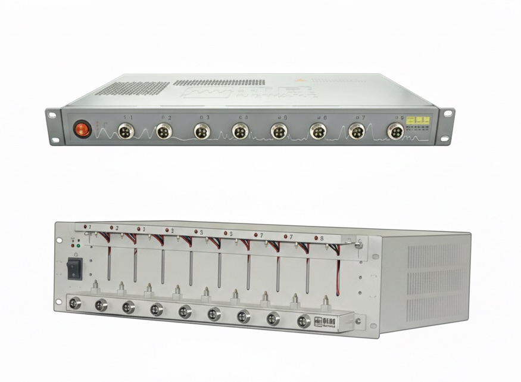
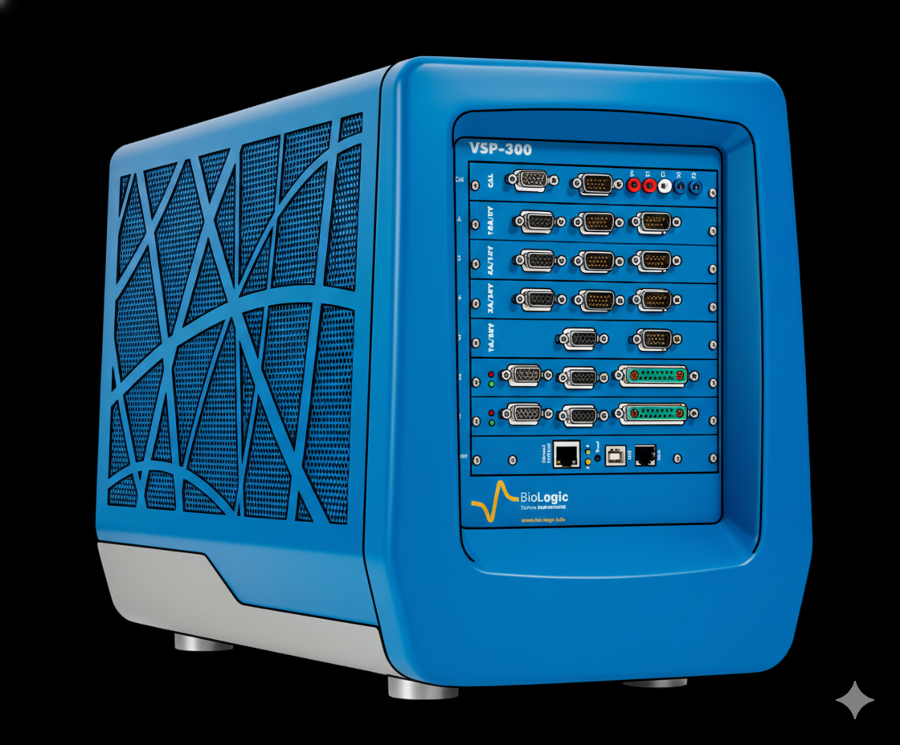
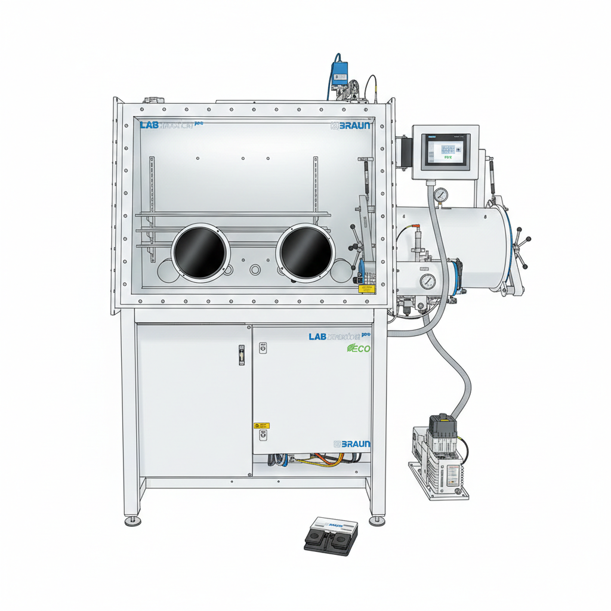
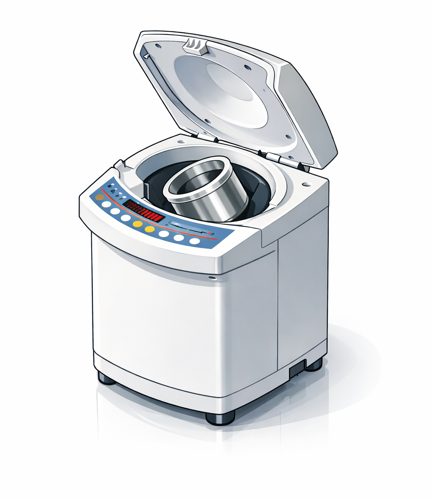
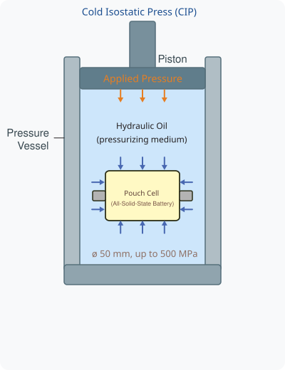
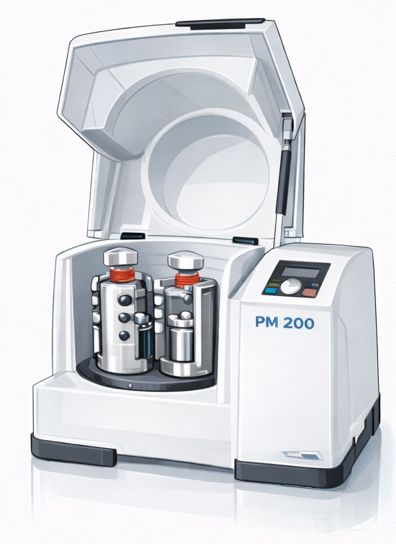

Lab Instrumentation
Our laboratory is being equipped with cutting-edge instruments to support research in electrochemical energy storage, materials synthesis, and advanced characterization. In addition to in-house capabilities, we have established access to synchrotron facilities at the National Synchrotron Radiation Research Center (NSRRC) in Hsinchu, Taiwan, and maintain collaborations with the Advanced Photon Source (APS) at Argonne National Laboratory.
This page will be updated as the lab is established in August 2026. Please check back for the latest information on our available instruments.
Electrochemical Characterization

Battery Cycler
Multi-channel battery testing system for galvanostatic cycling, rate capability testing, and long-term cycling experiments.
- Current Ranges: 5 ranges - 0.2 μA ~ 100 mA
- Voltage Ranges: ± 5V

Potentiostat (VSP300 - Biologic)
Precision electrochemical workstation for cyclic voltammetry, linear sweep voltammetry, chronoamperometry, and other electrochemical techniques.
- Voltage Range: ± 10 V down to ± 30 mV
- Resolution: From 1 µV (± 60 mV range) to 333 µV (± 10 V range)
- Current Range: ± 1 A to 10 nA
- EIS Frequency Range: 11 MHz to 10 µHz
TBD
TBD
- Placeholder — to be updated
Materials Synthesis & Preparation

Argon-Filled Glovebox
Inert atmosphere workstation for moisture- and oxygen-sensitive material handling, battery cell assembly, and solid electrolyte processing. Essential for all-solid-state battery fabrication.
- H2O, O2 < 1 ppm
- Heatable antichamber
- Working gas: Argon

Planetary Mixer (Thinky ARM-310)
Planetary centrifugal mixer used for battery slurry preparation and dry powder mixing.
- Speed (Rotation): 200~2000 RPM (Step mode); 2000 RPM (Fixed mode)
- Memory Settings: 5 distinct program memories
- Mixing System: Non-vacuum, planetary (rotation and revolution)

Cold Isostatic Press (CIP)
Tool for fabricating ASSB pouch cells by applying uniform isostatic pressure through a hydraulic oil medium. Unlike uniaxial pressing, isostatic pressing transmits equal pressure from all directions, resulting in most uniform densification of cell components.
- Temperature: Room Temperature
- Maximum Pressure: 500 MPa
- Sample Diameter: 50 mm
- Cell Type: Pouch Cell
- Pressure Medium: Hydraulic Oil

Planetary Ball Mill (Retsch PM 200)
High-energy milling for solid electrolyte synthesis, composite cathode preparation, and mechanochemical synthesis of battery materials.
- Grinding Stations: 2
- Maximum Speed: 100~650 RPM
- Speed Ratio: 1:2
- Grinding Jar Sizes: 25 ml
Synchrotron & External Facilities
NSRRC — National Synchrotron Radiation Research Center
We have established beamtime access at Taiwan's national synchrotron facility in Hsinchu for operando/in-situ X-ray absorption spectroscopy (XAS), X-ray diffraction (XRD), and projection X-ray microscopy (PXM) measurements.
- Techniques: XAS, XRD, SAXS, XRF, TXM
- Location: Hsinchu Science Park, Taiwan
- Website: nsrrc.org.tw
Advanced Photon Source (APS) — Argonne National Laboratory
Through collaboration with the Imaging Group at APS and Prof. Shirley Meng's group at the University of Chicago, we have access to world-class X-ray micro-computed tomography (µXCT) and high-energy synchrotron X-ray beamlines for 3D non-destructive battery characterization.
- Techniques: µXCT, High-energy XRD, Nano-tomography
- Location: Lemont, Illinois, USA
- Website: aps.anl.gov
Interested in Using Our Facilities?
We welcome collaborations with researchers interested in battery characterization and materials synthesis. Contact us to discuss potential collaborations or shared instrument access.
Contact Us